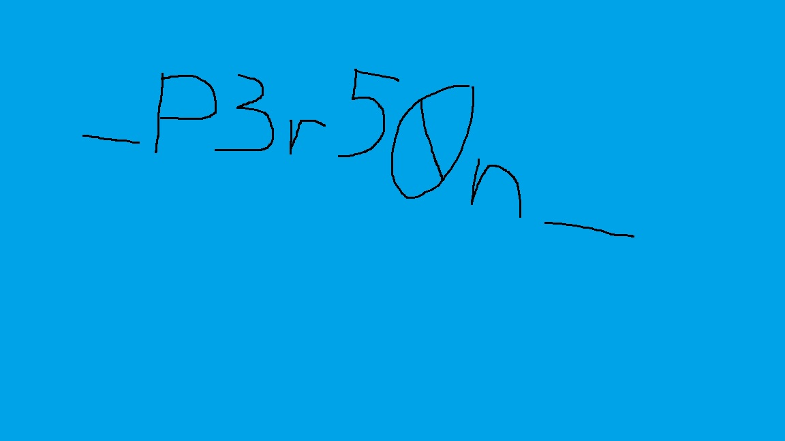

What Did You Type
The archive contains two PCAPs: one records USB keyboard traffic, and the other records files being uploaded over HTTP. The supplied PbWE.txt is a Base64-encoded encrypted ZIP containing the program responsible for the upload.
The recovered flag is:
CMO{Dumb357_P3r50n_1n_7h3_M1lky_W4y_!!!}It is split between an XLSX cell, handwriting in a JPG, and a DOCX watermark. All three files were recovered from the network capture. The JPG fragment was read visually; the solver labels that transcription rather than pretending to perform OCR. The result also matches the repository author’s published flag.
1. Identify the supplied evidence
Repository: crackmesone/ctf-2026-challenges-public, commit 5f8857cf3556e4e36d7e7fc4650044ae682701b8.
The files are under What did you type/Handout/:
| File | SHA-256 |
|---|---|
chall.zip |
425e58419c3b76d47ab7973c95d26b172b670a7917fe4be100c5c4a743b764a0 |
PbWE.txt |
cb3854b84b78259d09272cf2cb188f586bc422313b4035325e4f2ad9dff86f8d |
Extract the challenge archive using crackmes.one:
7z x -pcrackmes.one chall.zip -owork
file work/*The names are misleading if considered without their file types:
monitor_hardware: pcap capture file, USB with USBPcap header
monitor_network: pcap capture file, Ethernetmonitor_hardware has 61,760 packets and SHA-256 dc1de2d5f8f6a5d7fbc4275e6a77a15203a7c77eb977185a03b5a8e1413e67f2. monitor_network has 110 packets and SHA-256 16967eb56744af0b3eae055686a3d9f6aa04c6b0ce542cf15ec8b1059b12e9dc.
The two captures have different dates. Do not merge their timestamps into a single precise incident timeline without additional evidence. The useful relationship here comes from the commands, program, and upload behavior.
2. Read the USB keyboard reports
List interrupt transfers carrying eight-byte reports:
tshark -r work/monitor_hardware \
-Y 'usb.transfer_type==0x01 && usb.data_len==8' \
-T fields -e frame.number -e usbhid.dataThe initial rows include:
75 0000000000000000
1383 0000130000000000
1411 0000000000000000
1459 0000120000000000
1487 0000000000000000
1547 00001a0000000000For these boot-keyboard reports, byte 0 contains modifier bits, byte 1 is reserved, and bytes 2–7 contain pressed usage codes. Usage 0x13 is p, 0x12 is o, and 0x1a is w. Left or right Shift is detected by modifier & 0x22.
Track the set of held keys and emit only newly pressed usages. The all-zero reports release the keys; emitting every report as a character would produce duplicates or meaningless nulls. Tab completion means the capture does not contain the fully expanded shell commands, so preserve Tab and editing keys in the transcript.
The decisive command is readable after decoding:
unzip -P 1m_g0d_!! sus.z<TAB> -d outThe transcript also contains a download of https://0x0.st/PbWE.txt, writing it to sus.zip, extracting it, and running the recovered module. The captured password is therefore:
1m_g0d_!!There is no reason to contact the historical URL. The repository already supplies PbWE.txt.
3. Decode the supplied download
Decode the Base64 file and list the resulting archive:
import base64
from pathlib import Path
Path("PbWE.zip").write_bytes(base64.b64decode(Path("PbWE.txt").read_bytes()))It contains one password-protected entry, module.exe, 74,240 bytes long. Use the USB password:
7z x '-p1m_g0d_!!' PbWE.zip -omodule
file module/module.exe
sha256sum module/module.exeOutput identifies a native Windows x64 PE. Its SHA-256 is:
1dd277512b952429580eea0cbd1b07299137630daca837f28a79e436edb7d703The rest of the analysis is static. No recovered executable is launched, and none of its network endpoints are contacted.
4. Export the HTTP bodies
Use HTTP reassembly rather than concatenating raw TCP packets yourself:
tshark -r work/monitor_network -Y http \
-T fields -e frame.number -e http.file_datahttp.file_data is printed as hex. Decode each nonempty field with bytes.fromhex().
The important bodies are:
| Frame | Body |
|---|---|
| 8 | 32-byte response to the initial GET |
| 16 | Cool_Story.docx |
| 32 | 20,548-byte encrypted upload |
| 43 | hello_darkness_my_old_friend.txt |
| 54 | 180-byte encrypted upload |
| 65 | IDK_why_I_saved_this.xlsx |
| 77 | 10,052-byte encrypted upload |
| 88 | sexy_picture.jpg |
| 103 | 33,524-byte encrypted upload |
The server’s repeated You good bro !! responses acknowledge the uploads; they are not file contents or keys.
The initial GET response contains:
66c9c5a2015ff2be075f3d430031f54d22f8ad7194363889a019350937946d74This becomes useful when tracing the loader.
5. Extract the loader’s encrypted resource
The loader’s main begins at 0x140003cc0. It hashes GetComputerNameA()’s result and compares the hash against the 32-byte value obtained by a GET to for-ultramar.com:9999.
The network capture gives us the response directly, so there is no need to recover the original hostname. At 0x140003e43, the loader selects a fixed IV at 0x14000a078, expands the 32-byte hash as an AES key, and decrypts its resource.
The resource lookup routine at 0x140003a50 calls:
FindResourceA(NULL, 254, 255);Resource type 255, name 254, contains 36,576 encrypted bytes. Its IV is:
0f0e0d0c0b0a09080706050403020100Decrypt it with AES-256-CBC using the captured GET response as the key. The resulting data begins with x64 instructions rather than an MZ header. It is shellcode carrying another serialized loader and its arguments. Removing valid PKCS#7 padding leaves 36,570 bytes.
The included solver has a small PE resource reader and performs this extraction directly from the file. It does not load the PE as a Windows process.
6. Skip the serialized flat program and decode its arguments
The shellcode contains a call/pop accessor at offset 0xc60:
call next
next:
pop rax
add rax, 8
retIt returns offset 0xc6d, where the serialized data starts. The four-byte program length is 10,987. The next object, immediately after that program, is a length-prefixed argument blob of 22,394 bytes.
This is why we do not need to execute the flat program or repair all its relocations merely to recover the next payload. Its argument parser tells us the data layout:
u32 mode = 0
u32 decoded_length = 22035
u32 encrypted_length = 22035
encrypted bytes
u32 xor_key_length = 343
XOR key bytesIn the embedded flat program, routine offset 0x336 XORs each data byte with key[index % key_length]. Mode 0 selects a copy path instead of RtlDecompressBuffer, so no decompressor is needed for this sample.
Applying the repeating XOR produces another serialized object:
length-prefixed label
length-prefixed PE imageThe second object is a 22,016-byte native executable. Its SHA-256 is:
2b0231e9a67a15e8e3d3bdc704209f71391794d4e99181334fa6b9cccd8d3c6aThis is the actual file collector. Keep it as analysis evidence; it is not necessary to run it.
7. Recover the per-file encryption format
The recovered collector’s main, at 0x140002560, enumerates the current directory and selects filenames containing .txt, .doc, .docx, .xls, .xlsx, .png, or .jpg.
Its file-encryption routine starts at 0x140002240. It seeds the MSVC PRNG with time, takes the low byte of four rand() results, and hashes those four bytes with SHA-256. At 0x1400023ed, it uses that digest as its AES-256 key and the same descending-byte IV at 0x140006078.
After padding and encrypting the file, it prepends the original four random bytes to the upload. The complete format is:
random_prefix[4] || AES-256-CBC(SHA256(random_prefix), fixed_IV, PKCS7(file))That explains why every encrypted upload length is four more than a multiple of 16. The key derivation input is sent in the clear. We do not need to brute-force time or reproduce rand().
For one recovered HTTP body:
import hashlib
from Crypto.Cipher import AES
from Crypto.Util.Padding import unpad
prefix = upload[:4]
key = hashlib.sha256(prefix).digest()
iv = bytes(range(15, -1, -1))
padded = AES.new(key, AES.MODE_CBC, iv).decrypt(upload[4:])
original_file = unpad(padded, 16)All four uploads decrypt with valid padding and the expected file signatures:
| File | Plaintext size | SHA-256 |
|---|---|---|
Cool_Story.docx |
20,540 | 092a9ee7afa930f95431b58be845d5ef4ceca4fd8e25c2757ce439d9cfa18068 |
hello_darkness_my_old_friend.txt |
165 | Recorded in the solver’s manifest |
IDK_why_I_saved_this.xlsx |
10,045 | 192c686409fd9bbeffb23a885294b62bd69404a02cbc0f9d435a6977da27a6d2 |
sexy_picture.jpg |
33,504 | d7beee47670013a19417e4d7bc5e9a548b3aad8fb1bd137650cc0dc56bc24825 |
The solver also re-encrypts the padded plaintext and compares it to the captured ciphertext before writing the recovered file.
8. Read the three flag fragments
DOCX and XLSX files are ZIP containers. Inspect the contents instead of relying on what an office application’s normal document view happens to display.
In IDK_why_I_saved_this.xlsx, xl/sharedStrings.xml contains:
<si><t>CMO{Dumb357</t></si>The recovered sexy_picture.jpg displays the middle fragment:

Read it as _P3r50n_, including both underscores. This is a visual transcription, not a strings extraction.
In Cool_Story.docx, the main body is a distraction. The missing suffix is in word/header2.xml, as a VML text-path attribute used for a watermark:
<v:textpath ... string="1n_7h3_M1lky_W4y_!!!}"/>Extracting only <w:t> elements from word/document.xml misses this attribute completely. Search headers, drawings, attributes, and other ZIP members when the visible document body has no useful result.
Concatenate the spreadsheet, image, and watermark fragments:
CMO{Dumb357 + _P3r50n_ + 1n_7h3_M1lky_W4y_!!!}Result:
CMO{Dumb357_P3r50n_1n_7h3_M1lky_W4y_!!!}9. Reproduce the extraction
Install Wireshark’s tshark command and PyCryptodome in your analysis environment. Save the accompanying solve.py and point it at the repository root:
python -m venv .venv
source .venv/bin/activate
python -m pip install pycryptodome
python solve.py /path/to/ctf-2026-challenges-public --out recoveredThe solver reads the archive password from USB evidence, extracts the downloaded module, obtains the loader key from HTTP frame 8, statically unwraps the payload, decrypts the four files, and reads the XML fragments. It uses the documented visual transcription for the JPG, configurable with --image-fragment.
Its final output is:
ZIP password from USB: 1m_g0d_!!
Recovered frame 32: Cool_Story.docx (20540 bytes)
Recovered frame 54: hello_darkness_my_old_friend.txt (165 bytes)
Recovered frame 77: IDK_why_I_saved_this.xlsx (10045 bytes)
Recovered frame 103: sexy_picture.jpg (33504 bytes)
XLSX fragment: CMO{Dumb357
JPG fragment (manual transcription): _P3r50n_
DOCX fragment: 1n_7h3_M1lky_W4y_!!!}
CMO{Dumb357_P3r50n_1n_7h3_M1lky_W4y_!!!}This was reproduced from a fresh extraction of the supplied ZIP. No live C2 server or execution of the recovered collector is required.